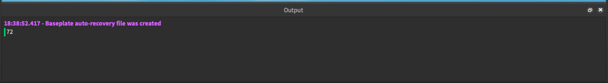

Variables
Objective
To learn what variables are and how to create them.
What are variables?
Variables are things used to store data or information about your game in the computer. In roblox you can store many different kinds of data.
How to create a variable
1) Open up a script, see this script's section
2) type in the word local and remember to add a space.
local
3) Type the name of your variable
local age
4) Type =
local age =
5) Type the value that your variable is storing.
local age = 9
Remember variable names must start with a letter and can only contain letters and numbers. Variable names can not contain spaces.
Variable Examples
Practice creating your own variables. Everything you see in a Roblox game is being stored in a variable.
local dogYears = 72
local name = "Amy" -- Because the variable is storing text we wrap it in quotes
local iLikeIcecream = true
How to print variables
1) Make sure your output window is open, see intro video.
2) Type in the word print
print
3) Type in ()
print()
4) Type the variable name you want to print
print(dogYears)
5) Play the game and you should see the variable in the output window.
